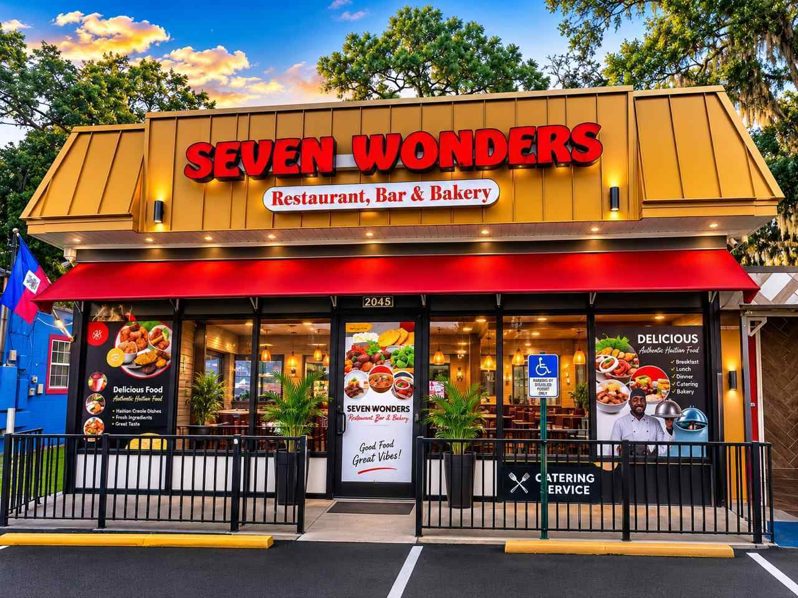
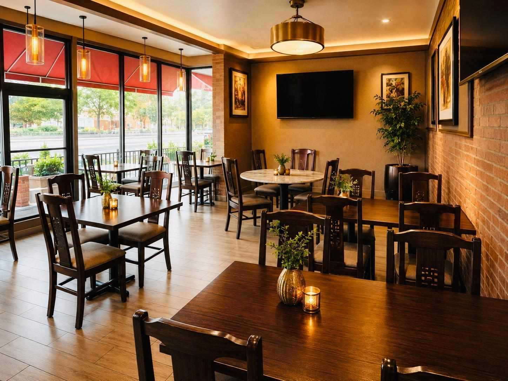
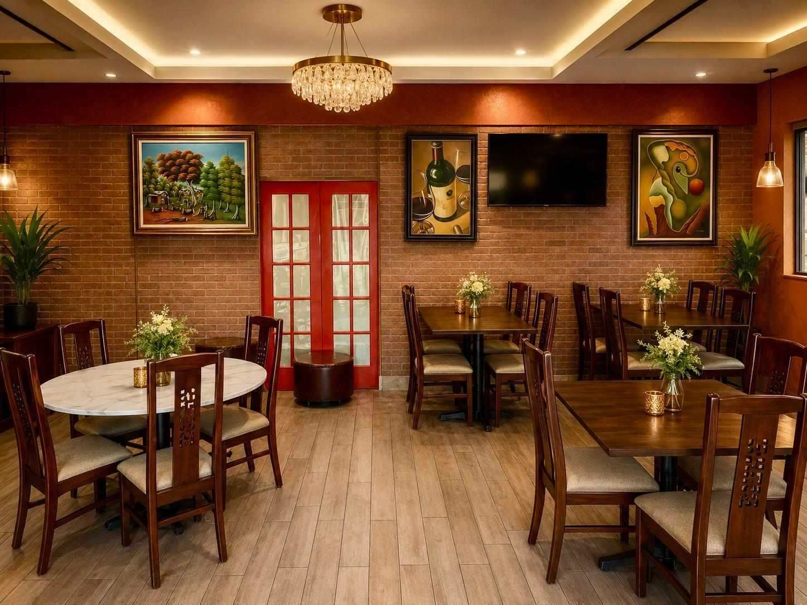

Oswald Gaboyau
Founder

Our Story
Family Founded
At Seven Wonders Restaurant & Bakery, every meal tells a story of tradition, family, and authentic Caribbean hospitality.
Founded on November 24, 2018, by Oswald Gaboyau and Marjorie Gaboyau, Seven Wonders began as a small Haitian bakery with a passion for creating fresh bread and pastries inspired by the rich culinary traditions of Haiti. Thanks to the unwavering support of our customers, the business quickly expanded into a full-service Haitian & Caribbean restaurant, becoming one of Jacksonville's favorite destinations for authentic island cuisine.
Our mission is simple: to bring people together through exceptional food, warm hospitality, and unforgettable experiences. Every dish is carefully prepared using fresh ingredients, traditional recipes, and the homemade flavors that remind our guests of home.
Founder
Founder


Seven Wonders has become known for its signature Haitian Rice & Beans (Diri Kole), Griot, Tassot, Legume, Fried Fish, Soup Joumou, freshly baked Haitian bread, delicious pastries, and handcrafted Caribbean specialties. Every meal reflects the passion, culture, and excellence that define our restaurant.
Since opening our doors, we have proudly served thousands of satisfied guests and successfully catered more than 200 weddings, birthday celebrations, corporate events, church gatherings, family reunions, and private parties throughout Jacksonville and the surrounding communities. Every event we serve is treated with the same dedication and attention to detail that has earned the trust of our customers.
At Seven Wonders, we believe that great food is more than a meal - it is an experience that creates memories, brings families together, and celebrates our rich Haitian and Caribbean heritage. Whether you are joining us for lunch, dinner, catering, or simply stopping by for fresh bread and pastries, our team is committed to making every visit memorable.
We invite you to discover the authentic taste of Haiti and the Caribbean in a warm, welcoming atmosphere where every guest is treated like family.
Seven Wonders Restaurant & Bakery - Authentic Haitian & Caribbean Cuisine, Freshly Baked Daily, Served with Passion.
Visit Us
2145 University Blvd. N
Jacksonville, FL 32211